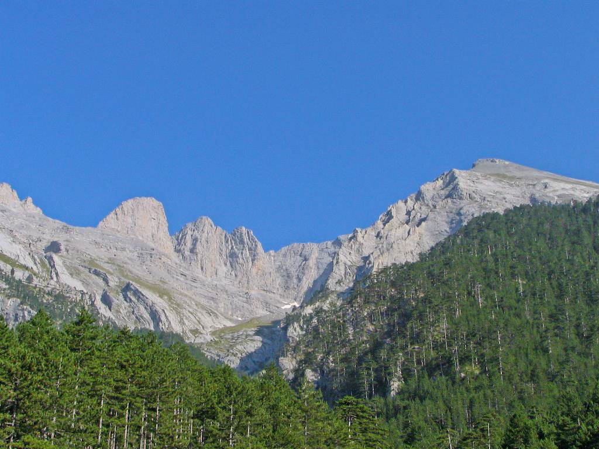
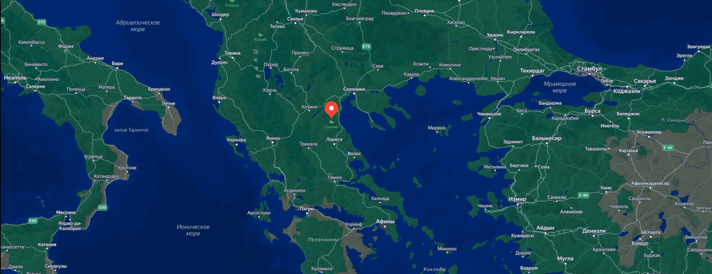

Олимп — горный массив, полностью находящийся на территории Греции на северо-востоке периферии Фессалия. Самой высокой точкой Олимпа является вершина Митикас высотой 2918,8 метра над уровнем моря, высочайшая вершина Греции. Среди других вершин Сколио, Стефани (Στεφάνι, 2909 м, иногда называется Тронос-Диос, Θρόνος Διός «Трон Зевса»), Скала (2866 м) и Туба (Τούμπα, 2801 м). В древнегреческой мифологии Олимп считается священной горой, местом пребывания богов во главе с Зевсом. В связи с этим греческих богов часто именуют «олимпийцами». На северном склоне Олимпа находился город-святилище македонян — Дион, то есть город Зевса. В древности Олимп также служил естественной границей Фессалии и Македонии. Является памятником природы. В 1938 году Олимп вошёл в состав первого в Греции национального парка. Расположенный на территории периферийных единиц Пиерия и Лариса, национальный парк Олимпа характеризуется огромным биоразнообразием. Здесь встречаются около 1700 видов растений, что составляет примерно 25 % от всех видов, встречающихся в Греции, включая 23 эндемика. Фауна представлена 8 видами амфибий, 22 видами пресмыкающихся, 32 видами млекопитающих и 136 видами птиц.

Вид на массив Олимп с западной стороны.
Большинство восхождений начинается из города Литохорона, в котором находится информационный центр для желающих подняться на Олимп. Оттуда можно доехать на такси до пункта «Приония» («Πριόνια»), расположенного на высоте 1100 метров, имеется также пеший маршрут. В Прионии — автостоянка, ночлег возможен в расположенном рядом монастыре Святого Дионисия. От Прионии пеший маршрут идёт до приюта «Спилиос-Агапитос» (Σπήλιος Αγαπητός, 2100 м), который состоит из гостиницы и зоны для кемпинга, от которого можно подняться до вершины Скала (2866 м), а также других горных приютов. С вершины Скала можно попасть на Сколио (2912 м) и Митикас. Восхождение на Митикас опасно ночью и в плохую погоду, а также требует некоторой физической подготовки. Первое зафиксированное восхождение было совершено в 1913 году Христосом Какаласом.

Олимп на карте.